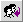

| Termo/Ícone |
Nome/Texto |
Ação |
 | Voltar para a entrada | Retorna para a pasta corrente. |
 | Compor Mensagem | Cria nova mensagem de correio. |
 | Responder | Responde a mensagem para o remetente. |
|
 | Responde a todos | Responde para todos que constam no e-mail |
 | Encaminhar | Encaminha a mensagem para outra(as) caixa(as). |
 | Encaminha como anexo | Encaminha o conteúdo da mensagem como arquivo anexo. |
 | Impressão | Envia a mensagem para a impressora. |
 | Calendário | Abre a opção de calendário |
 | Sair | Sai da sessão do Open Webmail. |